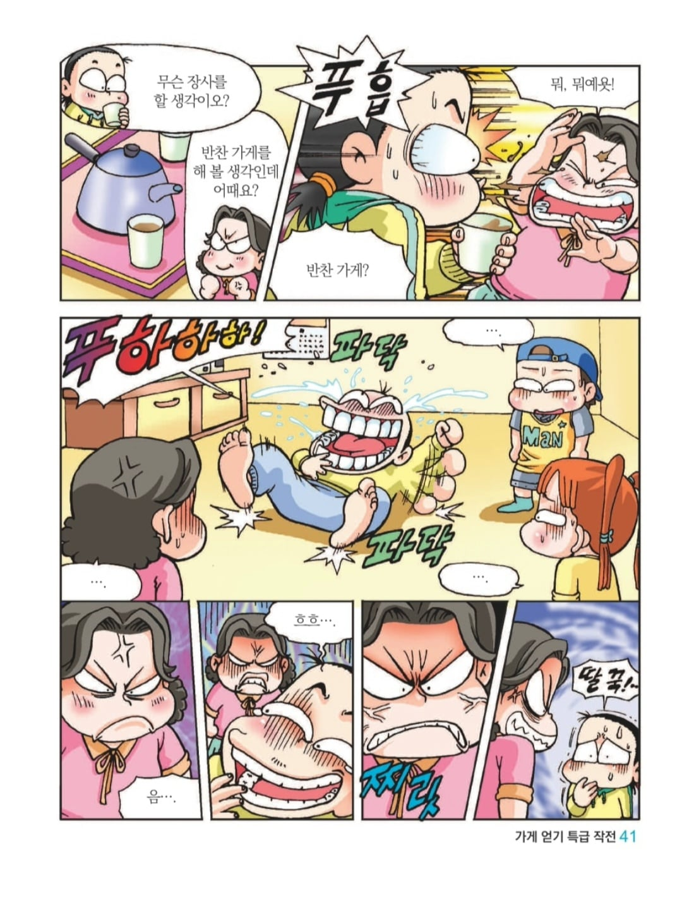
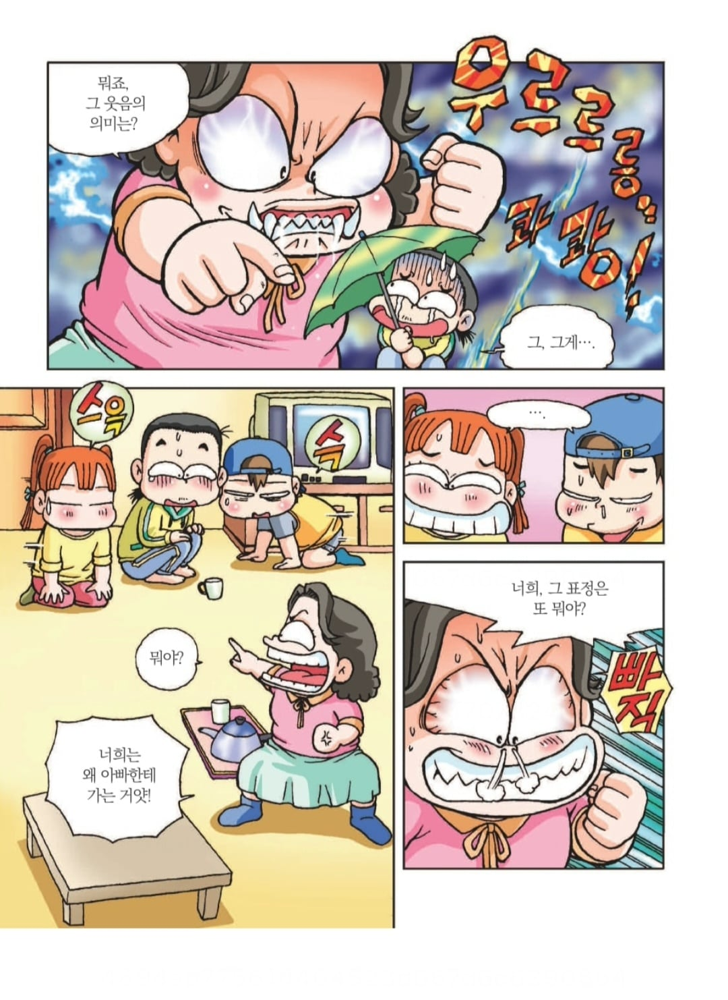

누가 연근 조림을 먹어
이거 만화 뭐였드라 그 부자되려고 알뜰살뜰 돈 모으는 만화 아닌가
아들, 딸한테 짠돌이, 짠순이 소리 많이 듣는 사람한테 상 주는 거였던 걸로 기억함;
무인도에서 살아남기
빈대가족 살아남기
?? : 어머니의 노고에 감사하지만 이 음식은 앞으로 절대 하지 마십시오
내 기억상 엄마가 반찬적게 먹게하려고 평소에 ㅈㄴ짜게 만들었는데 실제 실력은 대장금이었던걸로 기억
엄마 반찬 개못하잖아 ㅋㅋ